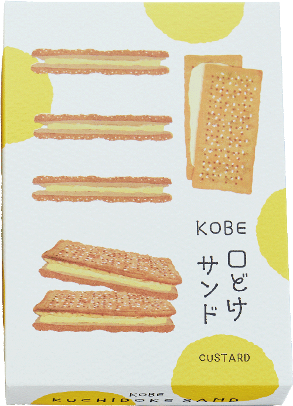
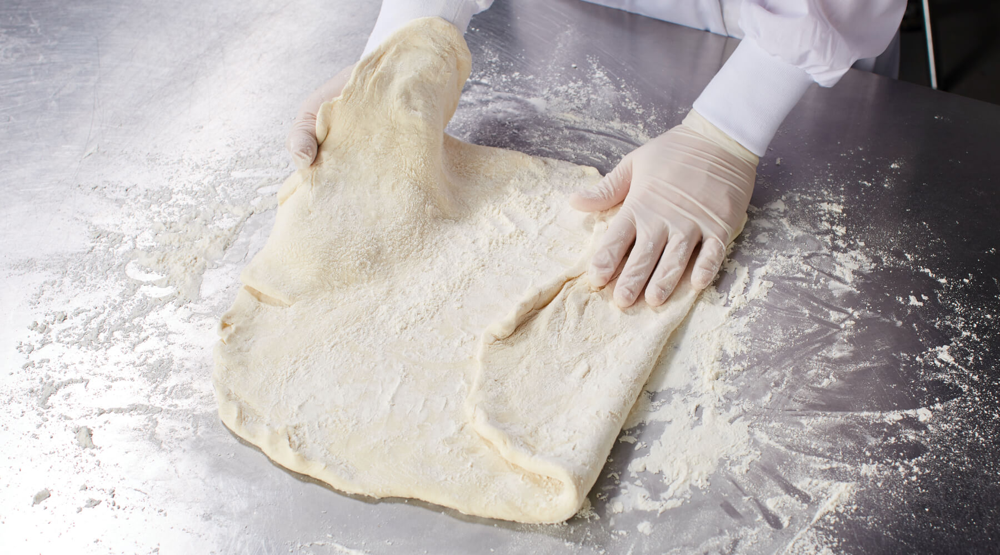
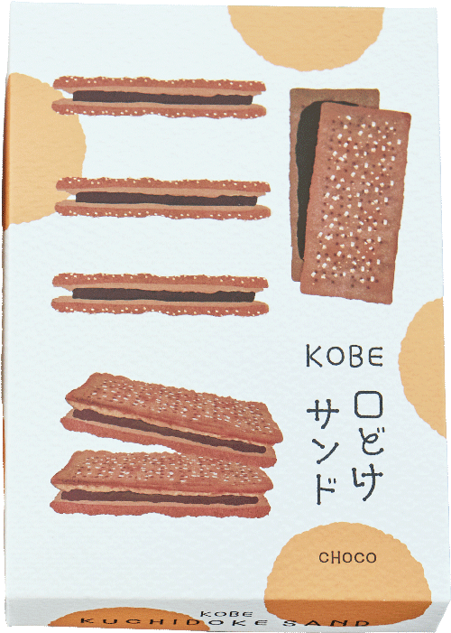
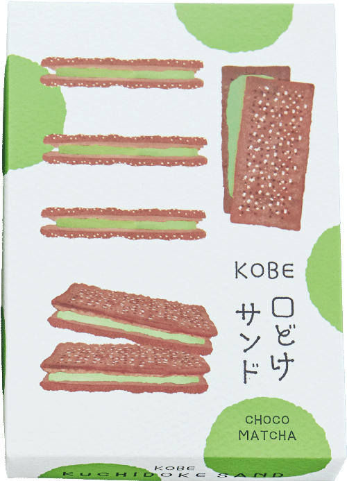

01CUSTARD

カスタード

卵のコク、すっと軽い余韻。



SCROLL TO DISCOVER ↓
KOBE, JAPAN · CREAM SAND PIE
A GIFT
THAT MELTS.
香ばしいパイと、なめらかなクリーム。
重なるふたつが、口の中でひとつになる。

神戸から、ひとくちのしあわせ。

THE PASTRY
口どけのために、
一からつくるパイ生地。
サクサクとほどけ、クリームとなじむ食感を目指して、粉の配合から自社で設計。
工場で生地を仕込み、折り重ねるところから、パイシートをつくっています。
プレーンとチョコ、それぞれの生地に合わせて折り数を変え、薄く繊細な層に。
折り込んだ生地は、一日じっくりと休ませて。
香ばしく、サクサクと軽い食感に焼き上げます。


THE CREAM
ふわっとなめらかな口どけを生むのは、クリームに含まれる空気の量。
クリームの仕上げには、温度と比重を毎回確認。
パイと一緒にほどける、ちょうどいい状態に整えます。
パイを活かし、クリームも楽しめる。
ふたつが心地よく重なる量を、一つひとつ均一に。

THREE FLAVORS
気分に合わせて選べる、三つの味。
卵のコク、すっと軽い余韻。


カカオの深みを、なめらかに。


抹茶のほろ苦さと、やさしい甘さ。

MADE WITH CARE
急がず、飛ばさず、ひとつずつ。
おいしさへつなぐ5つの工程。
粉から生地を仕込み、油脂シートを丁寧に折り込みます。
プレーンとチョコ、それぞれに合わせた折り数で、繊細な層に。
折り込んだ生地を低温で一日じっくり休ませ、翌日の成型へ。
香ばしさとサクサクの食感を整えます。
生地を薄く伸ばして成型し、砂糖をまとわせてオーブンへ。
香ばしく、サクサクのパイに焼き上げます。
温度と比重を確かめながら、ふわっとなめらかな状態に。
パイを活かし、クリームも楽しめる量を均一に絞ります。
焼き上げたパイにクリームをサンドし、一つひとつ個包装へ。
できあがった口どけを、そのまま包みます。
A GIFT FROM KOBE
KOBE口どけサンドは、
どこかあたたかな神戸の空気と、
口の中でほどけていく、お菓子のやさしさ
そのふたつを重ね合わせ、
「神戸らしさ」をデザインに込めました。
おいしさと一緒に、
神戸で出会った小さなときめきまで、
持ち帰ってもらえたら。